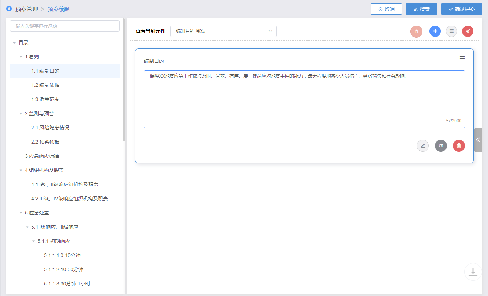
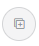

| 1. | 在“数字化预案编制”页面，单击〖添加文档结构内容〗按钮，界面右侧显示“选择元件”区域 |
| 2. | 单击选择需要的元件，此时界面左侧显示“元件详情预览”区域。 |
| 3. | 单击按钮确认选择该元件。如Fig 1所示 Fig 1 选择元件

|
| 图标 | 操作说明 |
| 可通过可视化界面拖拽生成元件来继续添加元件。 | |
| 可手动选择元件库中已有的元件来继续添加元件。 | |
| 清空文档结构内容区域的数据。 | |
|  | 复制已选元件 |
| 编辑已选元件 |